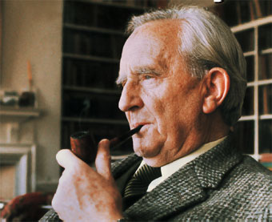

John Ronald Reuel Tolkien, conocido popularmente como J.R.R. Tolkien, nació el 3 de enero de 1892 en la ciudad de Bloemfontein, en el Estado Libre de Orange (actual Sudáfrica). Sus padres eran Arthur Reuel Tolkien y Mabel Suffield. Por una tradición familiar, el pequeño recibió el mismo nombre que el de su abuelo paterno, John. Su segundo nombre, Ronald, fue idea de su madre, quien estaba convencida de que iba a ser una niña a la que quería llamar Rosalind. Finalmente, el nombre elegido como sustituto fue el de Ronald. Por último, también recibió el segundo nombre de su padre, Reuel, palabra derivada del antiguo hebreo cuyo significado es «próximo a Dios». Un dato curioso de la infancia del pequeño John, recogido por Humphrey Carpenter en «J.R.R. Tolkien: Una biografía» (publicada en España por Ediciones Minotauro), es que le picó una tarántula en el jardín de su casa en Bloemfontein. Cuando el pequeño John contaba apenas 3 años, en 1895, su madre, Mabel, agotada por el riguroso clima sudafricano, decidió regresar a Inglaterra con sus hijos, John (cuya salud también se vio afectada por el clima) y Hilary, que había nacido el 17 de febrero de 1894.
John Ronald Reuel Tolkien, conocido popularmente como J.R.R. Tolkien, nació el 3 de enero de 1892 en la ciudad de Bloemfontein, en el Estado Libre de Orange (actual Sudáfrica). Sus padres eran Arthur Reuel Tolkien y Mabel Suffield. Por una tradición familiar, el pequeño recibió el mismo nombre que el de su abuelo paterno, John. Su segundo nombre, Ronald, fue idea de su madre, quien estaba convencida de que iba a ser una niña a la que quería llamar Rosalind. Finalmente, el nombre elegido como sustituto fue el de Ronald. Por último, también recibió el segundo nombre de su padre, Reuel, palabra derivada del antiguo hebreo cuyo significado es «próximo a Dios». Un dato curioso de la infancia del pequeño John, recogido por Humphrey Carpenter en «J.R.R. Tolkien: Una biografía» (publicada en España por Ediciones Minotauro), es que le picó una tarántula en el jardín de su casa en Bloemfontein. Cuando el pequeño John contaba apenas 3 años, en 1895, su madre, Mabel, agotada por el riguroso clima sudafricano, decidió regresar a Inglaterra con sus hijos, John (cuya salud también se vio afectada por el clima) y Hilary, que había nacido el 17 de febrero de 1894. Arthur, padre de John, se quedó en Sudáfrica al cargo de la venta de diamantes y otras piedras preciosas al Banco de Inglaterra. Sin embargo, Arthur falleció el 15 de febrero de 1896 a causa de una fiebre reumática. Después de tan trágica pérdida y sin ingresos, Mabel se fue a vivir con sus hijos junto a su familia en Birmingham, mudándose ese mismo año a la vecina localidad de Sarehole. La gran belleza de la campiña inglesa cautivó a John desde el primer momento, causándole una gran impresión, como queda patente en sus escritos. La madre de John, Mabel, se hizo cargo de su educación, enseñándole las bases del latín cuando apenas contaba 4 años, edad a la que el pequeño John ya sabía leer, y poco después, escribir de forma fluida. A tan tierna edad, ya se despertó en John su curiosidad y amor hacia los idiomas, pues uno de sus entretenimientos favoritos era el de inventar algunos idiomas propios.
John Ronald Reuel Tolkien, conocido popularmente como J.R.R. Tolkien, nació el 3 de enero de 1892 en la ciudad de Bloemfontein, en el Estado Libre de Orange (actual Sudáfrica). Sus padres eran Arthur Reuel Tolkien y Mabel Suffield. Por una tradición familiar, el pequeño recibió el mismo nombre que el de su abuelo paterno, John. Su segundo nombre, Ronald, fue idea de su madre, quien estaba convencida de que iba a ser una niña a la que quería llamar Rosalind. Finalmente, el nombre elegido como sustituto fue el de Ronald. Por último, también recibió el segundo nombre de su padre, Reuel, palabra derivada del antiguo hebreo cuyo significado es «próximo a Dios». Un dato curioso de la infancia del pequeño John, recogido por Humphrey Carpenter en «J.R.R. Tolkien: Una biografía» (publicada en España por Ediciones Minotauro), es que le picó una tarántula en el jardín de su casa en Bloemfontein. Cuando el pequeño John contaba apenas 3 años, en 1895, su madre, Mabel, agotada por el riguroso clima sudafricano, decidió regresar a Inglaterra con sus hijos, John (cuya salud también se vio afectada por el clima) y Hilary, que había nacido el 17 de febrero de 1894. Arthur, padre de John, se quedó en Sudáfrica al cargo de la venta de diamantes y otras piedras preciosas al Banco de Inglaterra. Sin embargo, Arthur falleció el 15 de febrero de 1896 a causa de una fiebre reumática. Después de tan trágica pérdida y sin ingresos, Mabel se fue a vivir con sus hijos junto a su familia en Birmingham, mudándose ese mismo año a la vecina localidad de Sarehole. La gran belleza de la campiña inglesa cautivó a John desde el primer momento, causándole una gran impresión, como queda patente en sus escritos. La madre de John, Mabel, se hizo cargo de su educación, enseñándole las bases del latín cuando apenas contaba 4 años, edad a la que el pequeño John ya sabía leer, y poco después, escribir de forma fluida. A tan tierna edad, ya se despertó en John su curiosidad y amor hacia los idiomas, pues uno de sus entretenimientos favoritos era el de inventar algunos idiomas propios. Cuando apenas contaba 12 años, John fue golpeado nuevamente por la tragedia, pues su madre Mabel falleció en 1904 a causa de unas complicaciones de la diabetes que padecía. John y su hermano pequeño, Hilary, quedaron entonces al cuidado del padre Francis Xavier Morgan, sacerdote católico (de origen jerezano) del Oratorio de Birmingham. John contaba 16 años cuando en 1908 conoció a la que se convertiría en el amor de su vida: Edith Mary Bratt. Sin embargo su relación no era bien vista por el padre Morgan, ya que pensaba que la chica distraía a John de los estudios. Después de varias advertencias y de un par de intentos de separar a los jóvenes, finalmente el padre Morgan acabó prohibiendo a John que mantuviera contacto alguno con Edith hasta que cumpliera 21 años. Con el paso de los años, John continuaba demostrando sus aptitudes lingüísticas, desarrollando lenguajes más elaborados mientras asistía a la King Edward’s School. En la escuela formó junto a sus amigos la Tea Club and Barrovian Society (T.C.B.S.), una hermandad que solía reunirse en los grandes almacenes Barrow para tomar el té (de ahí su nombre), charlar, divertirse, recitar a los clásicos o sus propias composiciones.
John Ronald Reuel Tolkien, conocido popularmente como J.R.R. Tolkien, nació el 3 de enero de 1892 en la ciudad de Bloemfontein, en el Estado Libre de Orange (actual Sudáfrica). Sus padres eran Arthur Reuel Tolkien y Mabel Suffield. Por una tradición familiar, el pequeño recibió el mismo nombre que el de su abuelo paterno, John. Su segundo nombre, Ronald, fue idea de su madre, quien estaba convencida de que iba a ser una niña a la que quería llamar Rosalind. Finalmente, el nombre elegido como sustituto fue el de Ronald. Por último, también recibió el segundo nombre de su padre, Reuel, palabra derivada del antiguo hebreo cuyo significado es «próximo a Dios». Un dato curioso de la infancia del pequeño John, recogido por Humphrey Carpenter en «J.R.R. Tolkien: Una biografía» (publicada en España por Ediciones Minotauro), es que le picó una tarántula en el jardín de su casa en Bloemfontein. Cuando el pequeño John contaba apenas 3 años, en 1895, su madre, Mabel, agotada por el riguroso clima sudafricano, decidió regresar a Inglaterra con sus hijos, John (cuya salud también se vio afectada por el clima) y Hilary, que había nacido el 17 de febrero de 1894. Arthur, padre de John, se quedó en Sudáfrica al cargo de la venta de diamantes y otras piedras preciosas al Banco de Inglaterra. Sin embargo, Arthur falleció el 15 de febrero de 1896 a causa de una fiebre reumática. Después de tan trágica pérdida y sin ingresos, Mabel se fue a vivir con sus hijos junto a su familia en Birmingham, mudándose ese mismo año a la vecina localidad de Sarehole. La gran belleza de la campiña inglesa cautivó a John desde el primer momento, causándole una gran impresión, como queda patente en sus escritos. La madre de John, Mabel, se hizo cargo de su educación, enseñándole las bases del latín cuando apenas contaba 4 años, edad a la que el pequeño John ya sabía leer, y poco después, escribir de forma fluida. A tan tierna edad, ya se despertó en John su curiosidad y amor hacia los idiomas, pues uno de sus entretenimientos favoritos era el de inventar algunos idiomas propios. Cuando apenas contaba 12 años, John fue golpeado nuevamente por la tragedia, pues su madre Mabel falleció en 1904 a causa de unas complicaciones de la diabetes que padecía. John y su hermano pequeño, Hilary, quedaron entonces al cuidado del padre Francis Xavier Morgan, sacerdote católico (de origen jerezano) del Oratorio de Birmingham. John contaba 16 años cuando en 1908 conoció a la que se convertiría en el amor de su vida: Edith Mary Bratt. Sin embargo su relación no era bien vista por el padre Morgan, ya que pensaba que la chica distraía a John de los estudios. Después de varias advertencias y de un par de intentos de separar a los jóvenes, finalmente el padre Morgan acabó prohibiendo a John que mantuviera contacto alguno con Edith hasta que cumpliera 21 años. Con el paso de los años, John continuaba demostrando sus aptitudes lingüísticas, desarrollando lenguajes más elaborados mientras asistía a la King Edward’s School. En la escuela formó junto a sus amigos la Tea Club and Barrovian Society (T.C.B.S.), una hermandad que solía reunirse en los grandes almacenes Barrow para tomar el té (de ahí su nombre), charlar, divertirse, recitar a los clásicos o sus propias composiciones. Con 19 años, John viajó a Suiza con otros doce compañeros en el verano de 1911, y según recordaría años más tarde en una carta, aseguró que su experiencia en los Alpes le había servido de inspiración a la hora de relatar la travesía de Bilbo a través de las Montañas Nubladas en ‘El Hobbit‘. Cuando hubo cumplido los 21 años, John se puso en contacto con Edith, a la que le declaró su amor. Ambos se comprometieron en enero de 1913, y se casaron en Warwick el 22 de marzo de 1916 (podéis leer aquí el artículo que publicamos con motivo del centenario de su boda).
Durante esos años, Tolkien continuó desarrollando su interés en la filología y en crear leyendas propias que dieran cabida a las lenguas que inventaba. El 24 de septiembre de 1914 se produjo lo que muchos estudiosos, como John Garth, denominan el «momento fundacional» de la Tierra Media (aquí podéis leer traducido el artículo que escribió Garth con motivo del centenario de este acontecimiento): la escritura del poema ‘The Voyage of Éarendel the Evening Star‘ (El Viaje de Éarendel, la Estrella Vespertina). Un poema que supuso el génesis de su Legendarium y que Christopher Tolkien publicó en ‘El Libro de los Cuentos Perdidos 2‘, segundo volumen de la colección ‘La historia de la Tierra Media‘
Sin embargo, la apacible vida de John, al igual que la de todos los europeos, se vio bruscamente interrumpida con el estallido en 1914 de la Primera Guerra Mundial. En 1915, John se graduó en Oxford con una mención de honor en Literatura y Lengua Inglesas, y poco después de su graduación, se alistó en el ejército, sirviendo como oficial de comunicaciones (con el rango de alférez) en el 11º de los Fusileros de Lancashire, batallón con el que combatió en la cruenta Batalla del Somme (1 de julio – 18 de noviembre de 1916), en la que John vio morir a muchos de sus amigos. Con más de 95.000 muertos y unos 323.000 heridos, es la batalla más sangrienta del Ejército Británico, y sólo en el primer día murieron algo más de 19.000 soldados y otros 38.000 fueron heridos. Uno de los soldados que falleció en aquella sangrienta jornada fue Robert Q. Gilson, gran amigo de Tolkien, miembro de la T.C.B.S. y uno de los llamados «cuatro inmortales» juanto al propio Tolkien, G.B. Smith (quien fallecería unos meses más tarde) y Christopher Wiseman. Podéis leer los artículos que escribimos con motivo del centenario de la llegada de Tolkien a Francia y con motivo del centenario de su primera entrada en combate. El 27 de octubre, John cayó enfermo, víctima de la llamada fiebre de las trincheras, y el 8 de noviembre fue trasladado a Inglaterra. Durante su convalecencia empezó a dar forma a todo el conjunto de historias y leyendas de los Días Antiguos de la Tierra Media, un conjunto al que llamó ‘El libro de los cuentos perdidos‘. Como la mayoría de sus amigos murieron durante la Gran Guerra, para Tolkien el escribir se convirtió (en parte) en una forma de honrar su memoria
Tolkien fue sin duda uno de los filólogos más importantes de su época. En 1920, tras haber trabajado en la redacción del Oxford English Dictionary, John entró como profesor no titular de Lengua Inglesa en la Universidad de Leeds. Más tarde alcanzó el cargo de profesor, momento en el que aprovechó para reformar completamente su magisterio. Sin embargo, pasó casi toda su vida académica en Oxford; fue profesor de Anglosajón de 1925 a 1945 en el Pembroke College, y de 1945 a 1959 lo fue de Lengua y Literatura Inglesas en el Merton College. John dedicaba su tiempo libre a su familia y a su obra literaria, en la que había comenzado a trabajar al regreso del frente. Continuó así trabajando en ese conjunto de historias y leyendas que acabarían convirtiéndose, muchos años después, en ‘El Silmarillion‘. Inventó así una mitología propia, en compensación por la que no poseía Inglaterra, pues John siempre se había lamentado de que su país no poseyera una mitología tan rica como la de los países mediterráneos, especialmente la griega. Se interesó especialmente por las mitologías nórdicas, y realizó importantes traducciones y estudios de obras medievales, como el poema épico anglosajón Beowulf, o el conjunto de historias épicas nórdicas que conforman ‘La leyenda de Sigurd y Gudrún‘.
John Ronald Reuel Tolkien, conocido popularmente como J.R.R. Tolkien, nació el 3 de enero de 1892 en la ciudad de Bloemfontein, en el Estado Libre de Orange (actual Sudáfrica). Sus padres eran Arthur Reuel Tolkien y Mabel Suffield. Por una tradición familiar, el pequeño recibió el mismo nombre que el de su abuelo paterno, John. Su segundo nombre, Ronald, fue idea de su madre, quien estaba convencida de que iba a ser una niña a la que quería llamar Rosalind. Finalmente, el nombre elegido como sustituto fue el de Ronald. Por último, también recibió el segundo nombre de su padre, Reuel, palabra derivada del antiguo hebreo cuyo significado es «próximo a Dios». Un dato curioso de la infancia del pequeño John, recogido por Humphrey Carpenter en «J.R.R. Tolkien: Una biografía» (publicada en España por Ediciones Minotauro), es que le picó una tarántula en el jardín de su casa en Bloemfontein. Cuando el pequeño John contaba apenas 3 años, en 1895, su madre, Mabel, agotada por el riguroso clima sudafricano, decidió regresar a Inglaterra con sus hijos, John (cuya salud también se vio afectada por el clima) y Hilary, que había nacido el 17 de febrero de 1894. Arthur, padre de John, se quedó en Sudáfrica al cargo de la venta de diamantes y otras piedras preciosas al Banco de Inglaterra. Sin embargo, Arthur falleció el 15 de febrero de 1896 a causa de una fiebre reumática. Después de tan trágica pérdida y sin ingresos, Mabel se fue a vivir con sus hijos junto a su familia en Birmingham, mudándose ese mismo año a la vecina localidad de Sarehole. La gran belleza de la campiña inglesa cautivó a John desde el primer momento, causándole una gran impresión, como queda patente en sus escritos. La madre de John, Mabel, se hizo cargo de su educación, enseñándole las bases del latín cuando apenas contaba 4 años, edad a la que el pequeño John ya sabía leer, y poco después, escribir de forma fluida. A tan tierna edad, ya se despertó en John su curiosidad y amor hacia los idiomas, pues uno de sus entretenimientos favoritos era el de inventar algunos idiomas propios. Cuando apenas contaba 12 años, John fue golpeado nuevamente por la tragedia, pues su madre Mabel falleció en 1904 a causa de unas complicaciones de la diabetes que padecía. John y su hermano pequeño, Hilary, quedaron entonces al cuidado del padre Francis Xavier Morgan, sacerdote católico (de origen jerezano) del Oratorio de Birmingham. John contaba 16 años cuando en 1908 conoció a la que se convertiría en el amor de su vida: Edith Mary Bratt. Sin embargo su relación no era bien vista por el padre Morgan, ya que pensaba que la chica distraía a John de los estudios. Después de varias advertencias y de un par de intentos de separar a los jóvenes, finalmente el padre Morgan acabó prohibiendo a John que mantuviera contacto alguno con Edith hasta que cumpliera 21 años. Con el paso de los años, John continuaba demostrando sus aptitudes lingüísticas, desarrollando lenguajes más elaborados mientras asistía a la King Edward’s School. En la escuela formó junto a sus amigos la Tea Club and Barrovian Society (T.C.B.S.), una hermandad que solía reunirse en los grandes almacenes Barrow para tomar el té (de ahí su nombre), charlar, divertirse, recitar a los clásicos o sus propias composiciones. Con 19 años, John viajó a Suiza con otros doce compañeros en el verano de 1911, y según recordaría años más tarde en una carta, aseguró que su experiencia en los Alpes le había servido de inspiración a la hora de relatar la travesía de Bilbo a través de las Montañas Nubladas en ‘El Hobbit‘. Cuando hubo cumplido los 21 años, John se puso en contacto con Edith, a la que le declaró su amor. Ambos se comprometieron en enero de 1913, y se casaron en Warwick el 22 de marzo de 1916 (podéis leer aquí el artículo que publicamos con motivo del centenario de su boda). Durante esos años, Tolkien continuó desarrollando su interés en la filología y en crear leyendas propias que dieran cabida a las lenguas que inventaba. El 24 de septiembre de 1914 se produjo lo que muchos estudiosos, como John Garth, denominan el «momento fundacional» de la Tierra Media (aquí podéis leer traducido el artículo que escribió Garth con motivo del centenario de este acontecimiento): la escritura del poema ‘The Voyage of Éarendel the Evening Star‘ (El Viaje de Éarendel, la Estrella Vespertina). Un poema que supuso el génesis de su Legendarium y que Christopher Tolkien publicó en ‘El Libro de los Cuentos Perdidos 2‘, segundo volumen de la colección ‘La historia de la Tierra Media‘. J.R.R. Tolkien en 1916Sin embargo, la apacible vida de John, al igual que la de todos los europeos, se vio bruscamente interrumpida con el estallido en 1914 de la Primera Guerra Mundial. En 1915, John se graduó en Oxford con una mención de honor en Literatura y Lengua Inglesas, y poco después de su graduación, se alistó en el ejército, sirviendo como oficial de comunicaciones (con el rango de alférez) en el 11º de los Fusileros de Lancashire, batallón con el que combatió en la cruenta Batalla del Somme (1 de julio – 18 de noviembre de 1916), en la que John vio morir a muchos de sus amigos. Con más de 95.000 muertos y unos 323.000 heridos, es la batalla más sangrienta del Ejército Británico, y sólo en el primer día murieron algo más de 19.000 soldados y otros 38.000 fueron heridos. Uno de los soldados que falleció en aquella sangrienta jornada fue Robert Q. Gilson, gran amigo de Tolkien, miembro de la T.C.B.S. y uno de los llamados «cuatro inmortales» juanto al propio Tolkien, G.B. Smith (quien fallecería unos meses más tarde) y Christopher Wiseman. Podéis leer los artículos que escribimos con motivo del centenario de la llegada de Tolkien a Francia y con motivo del centenario de su primera entrada en combate. El 27 de octubre, John cayó enfermo, víctima de la llamada fiebre de las trincheras, y el 8 de noviembre fue trasladado a Inglaterra. Durante su convalecencia empezó a dar forma a todo el conjunto de historias y leyendas de los Días Antiguos de la Tierra Media, un conjunto al que llamó ‘El libro de los cuentos perdidos‘. Como la mayoría de sus amigos murieron durante la Gran Guerra, para Tolkien el escribir se convirtió (en parte) en una forma de honrar su memoria. Tolkien fue sin duda uno de los filólogos más importantes de su época. En 1920, tras haber trabajado en la redacción del Oxford English Dictionary, John entró como profesor no titular de Lengua Inglesa en la Universidad de Leeds. Más tarde alcanzó el cargo de profesor, momento en el que aprovechó para reformar completamente su magisterio. Sin embargo, pasó casi toda su vida académica en Oxford; fue profesor de Anglosajón de 1925 a 1945 en el Pembroke College, y de 1945 a 1959 lo fue de Lengua y Literatura Inglesas en el Merton College. John dedicaba su tiempo libre a su familia y a su obra literaria, en la que había comenzado a trabajar al regreso del frente. Continuó así trabajando en ese conjunto de historias y leyendas que acabarían convirtiéndose, muchos años después, en ‘El Silmarillion‘. Inventó así una mitología propia, en compensación por la que no poseía Inglaterra, pues John siempre se había lamentado de que su país no poseyera una mitología tan rica como la de los países mediterráneos, especialmente la griega. Se interesó especialmente por las mitologías nórdicas, y realizó importantes traducciones y estudios de obras medievales, como el poema épico anglosajón Beowulf, o el conjunto de historias épicas nórdicas que conforman ‘La leyenda de Sigurd y Gudrún‘. J.R.R. Tolkien Ya en Oxford, en 1926 conoció a C.S. Lewis, otro profesor de la Universidad que al igual que Tolkien, estaba fascinado con la literatura fantástica y la creación de historias propias. Ambos formaron los Inklings, un club literario del que también formaron parte otros académicos y escritores de Oxford como Charles Williams y Owen Barfield. Solían reunirse en pubs como The Eagle & Child, y durante sus encuentros leían sus escritos y se criticaban entre ellos. John y Edith tuvieron cuatro hijos, el sacerdote John Francis Reuel (17 de noviembre de 1917 – 22 de enero de 2003), Michael Hilary Reuel (octubre de 1920 – 1984), Christopher Tolkien (21 de noviembre de 1924) y Priscila Anne Reuel (1929). Fue precisamente para sus hijos por lo que Tolkien escribió un cuento infantil titulado ‘El Hobbit‘, cuyas primeras líneas fueron redactadas por Tolkien mientras corregía unos exámenes. John dudaba que sus historias le pudieran interesar al público, aunque finalmente fue persuadido por su gran amigo C.S. Lewis para que publicara ‘El Hobbit‘. El cuento fue publicado en 1937 por la editorial George Allen & Unwin, y su gran éxito cogió por sorpresa a Tolkien. Casi de inmediato, su editor le pidió que escribiera una secuela, pues el público demandaba más historias sobre los hobbits. Y fue así como Tolkien comenzó a escribir la que sería su obra maestra y cumbre de la literatura fantástica del siglo XX: ‘El Señor de los Anillos‘. Tardó 12 años en escribir tan magna obra, y debido a su volumen, fue publicada en tres entregas. ‘La Comunidad del Anillo‘, ‘Las dos torres‘, ambas publicadas en 1954, y ‘El retorno del Rey‘, que vio la luz un año después, en 1955. Si el éxito de ‘El Hobbit‘ sorprendió a Tolkien, el monumental éxito y la repercusión mundial causadas por ‘El Señor de los Anillos‘ lo asombró y maravilló.
Mientras trabajaba en la redacción de ‘El Señor de los Anillos‘, Tolkien publicó varias obras: el cuento corto ‘Hoja, de Niggle‘, publicado en 1939 en el periódico Dublin Review, y la novela ‘Egidio, el granjero de Ham‘, publicada por la editorial George Allen & Unwin en 1949. En 1962, y a petición de una tía suya, Tolkien publicó ‘Las aventuras de Tom Bombadil y otros poemas del Libro Rojo‘, una recopilación de 16 poemas, siendo sólo dos de ellos sobre el alegre Tom Bombadil. El resto son cuentos de hadas o relatos de bestiario en verso. Antes de su muerte, Tolkien publicó dos obras más: ‘Árbol y Hoja, y el poema Mitopoeia‘, un recopilatorio de varios cuentos publicado en 1964, y ‘El herrero de Wootton Mayor‘, cuento publicado en 1967. John se jubiló en 1959, dejando sus clases en Oxford, y en 1968, él y Edith se mudaron a la localidad de Bournemouth. Tras la muerte de Edith el 29 de noviembre de 1971, John hizo escribir sobre su lápida el nombre de Lúthien. Finalmente, John murió el 2 de septiembre de 1973. Un año y medio antes de morir, Tolkien fue nombrado Comendador de la Orden del Imperio Británico por la reina Isabel II el 28 de marzo de 1972, año en el que también la Universidad de Oxford le nombró Doctor Honoris Causa en Letras. Hoy, la tumba de John y Edith en el cementerio de Wolvercote de Oxford (lápida en la que aparecen grabados los nombres de Beren y Lúthien) es lugar de peregrinación obligada para los millones de admiradores de su obra.